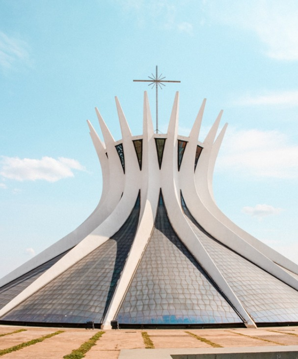

Roots Guide
Pontos Historicos

Catedral de Brasília (Catedral Metropolitana - Nossa Senhora Aparecida)
A Catedral Metropolitana Nossa Senhora Aparecida foi o primeiro monumento criado em Brasília. Projetada por Oscar Niemeyer com cálculo estrutural de Joaquim Cardozo, sua estrutura hiperboloide é composta por 16 colunas curvas que remetem a mãos postas em oração. Curiosidades: No interior do local, encontra-se uma réplica no tamanho original de Pietá, obra de Michelangelo. Também no ambiente tem a cruz da 1ª missa de Brasília, ocorrida em 1957. Endereço: Esplanada dos Ministérios, Lote 12, Brasília, DF Valor de entrada: Entrada franca, de segunda-feira, das 08:00 às 16:30, e terça a domingo, das 08:00 às 18:00 (As visitas são suspensas durante as celebrações religiosas). Link do Maps: link